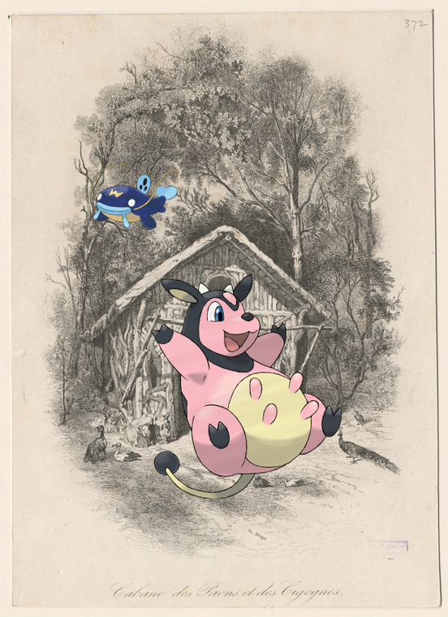
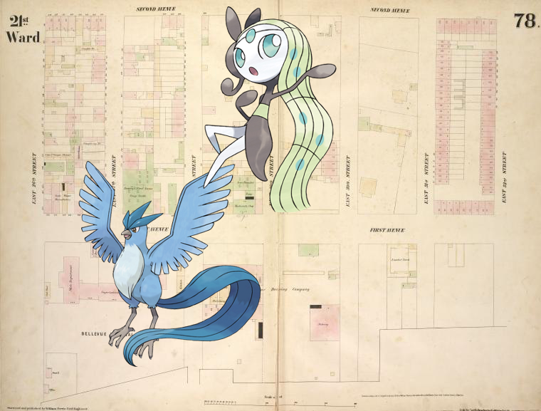

-
Miltank, Whiscash @ Cabanes des paons et des cicognes.
-
Articuno, Vanilluxe, Cascoon – Vereenigde Provincien der Nederlander. Chasseur de Damas..
-
Articuno, Meloetta-Aria | [Plate 78: Map bounded by Second Avenue, East 32nd Street, First Avenue, East 26th Street.].
-

-
Spinarak – Front wrapper.